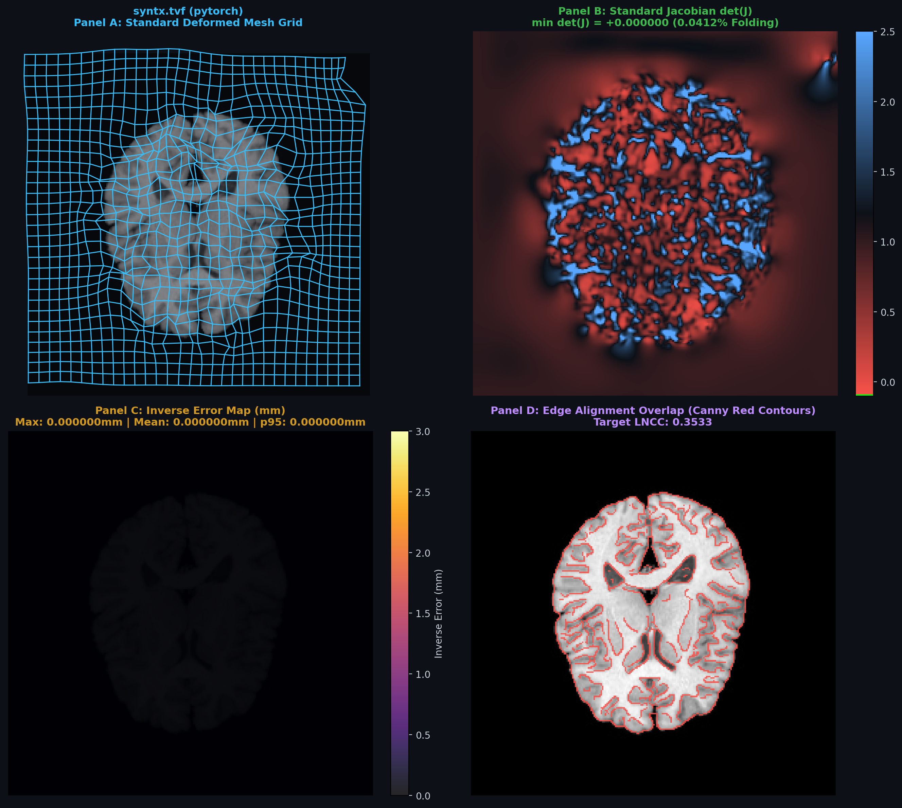

| Structural LNCC (w=9): | 0.3533 |
| Cortical DICE Overlap: | N/A |
| Mean Absolute Error (MAE): | 4.3221 |
| Mean Squared Error (MSE): | 119.3661 |
| Jacobian Range: | [+0.00, 14.36] |
| Grid Folding Rate: | 0.11% |
| Max Inverse Error: | 0.00 mm |
| Mean Inverse Error: | 0.000 mm |
